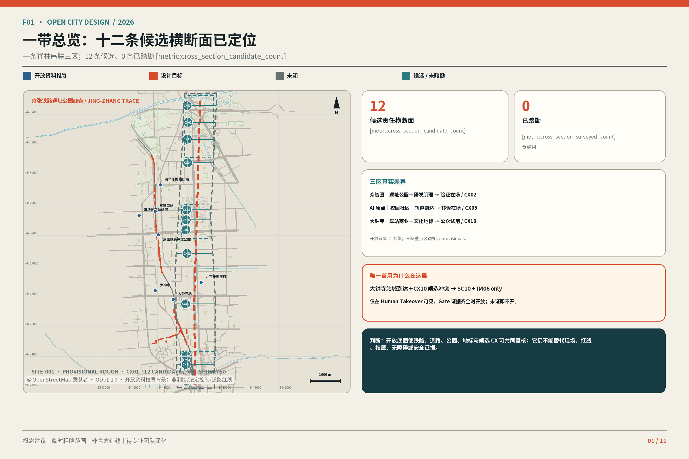
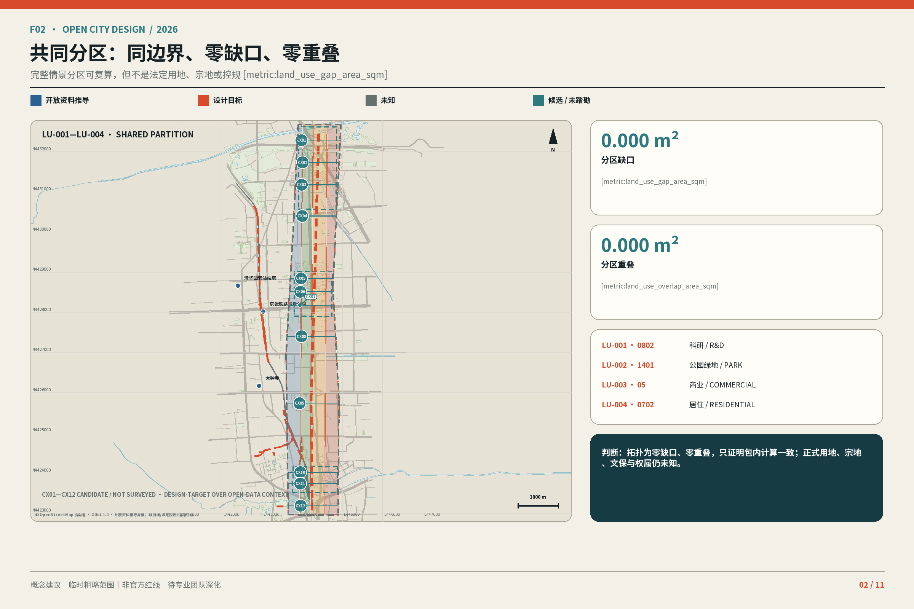
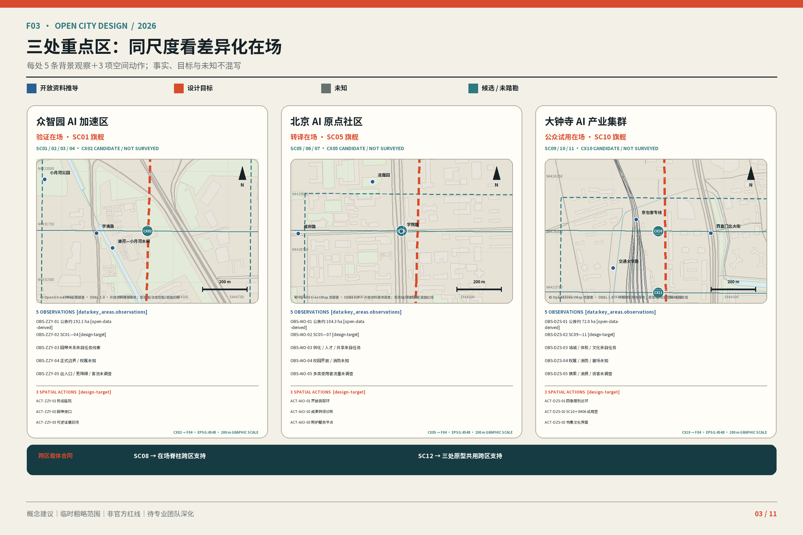
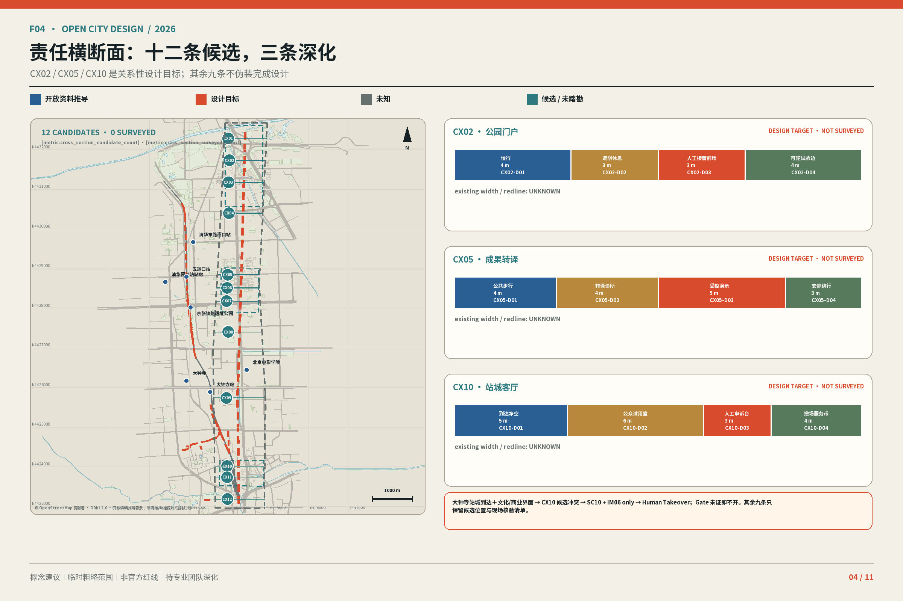
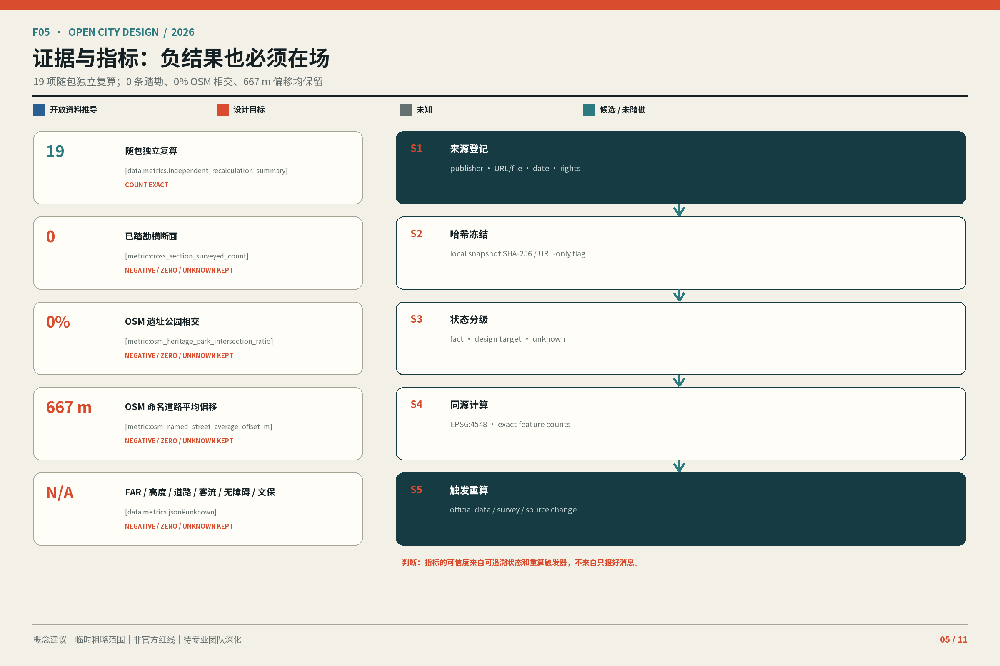
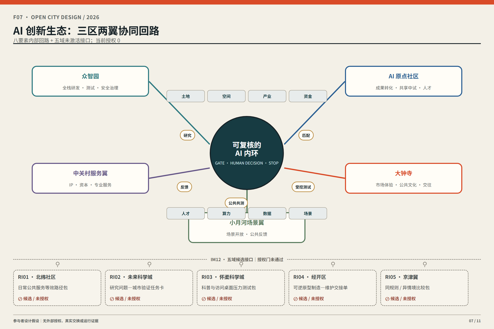
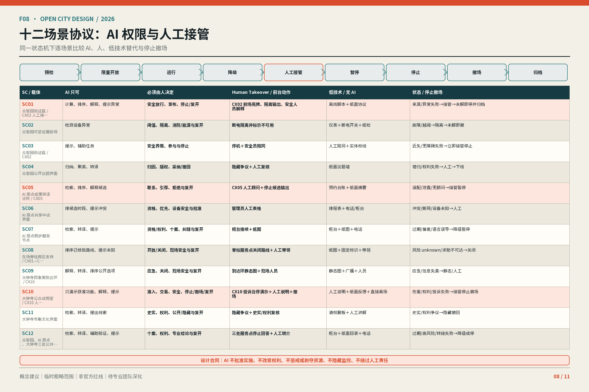
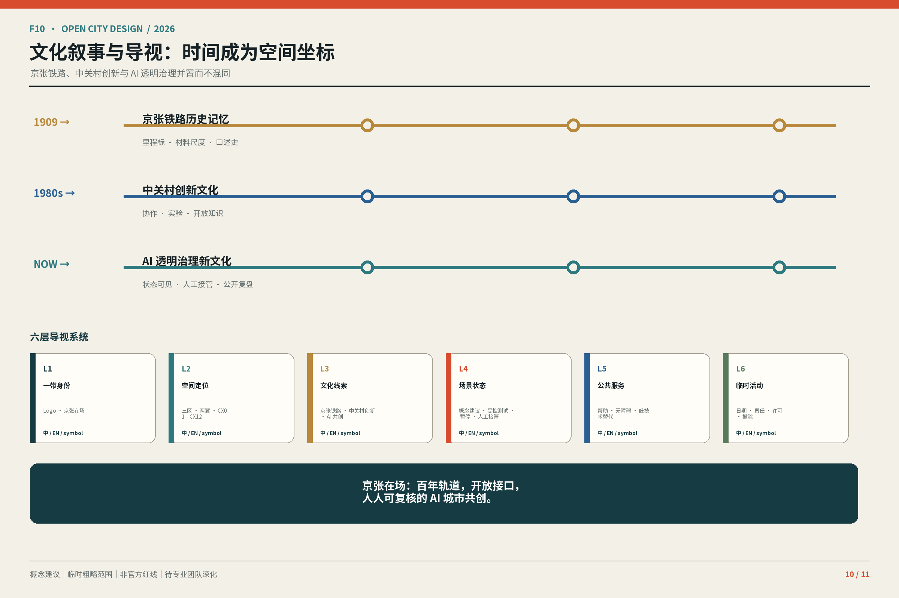
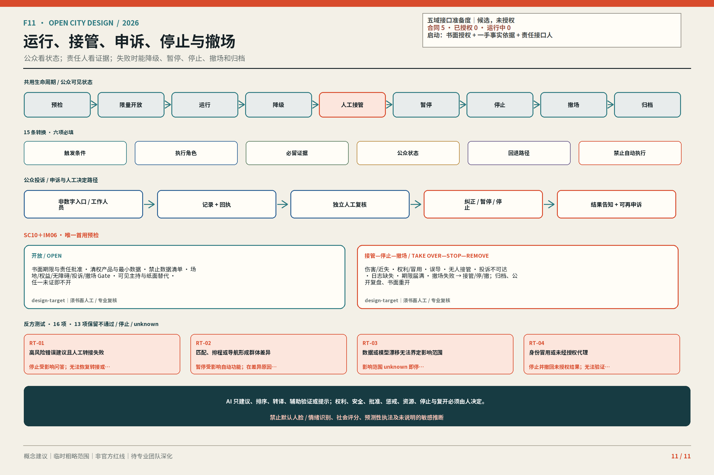

仍为 unknown / provisional
FAR、建筑高度、道路面积、人流、无障碍通过率、文保控制面积；3 个重点区 provisional；12 个 controller unknown。
把 AI 变成可见、可接管、可验证、可撤回的城市界面
评审路径：30 秒读 F01→F03→F08→F11；3 分钟沿同一路径核对空间、场景、人工 Gate 与退出；15 分钟再读全部 11 板及 T01—T07、10 claims、6/6 agent 与 31/31 锚点。F01—F05 来自同一 GeoJSON、metrics 与二期生成源；CX01—CX12 均为 candidate / not surveyed，只有 CX02、CX05、CX10 为关系性设计目标。临时范围和情景图层不冒充现场、测绘或法定规划。
1 条主命题｜4 个一级消息｜10/10 claims｜3 旗舰＋9 支持｜7 包覆盖 IM01—IM13｜6/6 agent｜31/31 required outputs。显式覆盖：总览地图、三层范围、重点区域、用地分区、交通慢行、蓝绿公共空间、建筑、更新项目、AI 场景、核心指标、来源与假设；精确回溯见 compliance_matrix.json。
京张铁路遗址公园线索与真实道路、公园、车站及已清权地标共同定位三处差异：众智园是遗址公园＋研发肌理，AI 原点是校园社区＋轨道到达，大钟寺是车站商业＋文化地标。全部背景均为 open-data-derived，不是测绘、红线、宗地或正式控制。
唯一首用：大钟寺站城到达与文化/商业界面形成 CX10 候选冲突，因此仅测试 SC10 + IM06 only；Human Takeover 必须可见，Gate 未证即不开。开放背景只进入 manifest 登记的证据数据文件，不进入 required design GeoJSON。
主命题 · 人在场、证据在场、责任在场，让 AI 能被看见、接管、验证和撤回。
场地 → 唯一首用 · 京张铁路遗址公园线索＋真实道路/公园/地标 → 大钟寺站城与文化/商业界面 → CX10 候选冲突 → SC10 + IM06 only → Human Takeover；Gate 未证即不开。
© OpenStreetMap 贡献者 · ODbL 1.0 · 开放资料推导背景；非测绘/法定控制/道路红线。
FAR、建筑高度、道路面积、人流、无障碍通过率、文保控制面积；3 个重点区 provisional；12 个 controller unknown。
法律审查、无障碍审计、安全认证、现场调查、运营主体确认与正式批准。
只作桌面审查；0 份正式项目 GIS/CAD
CX02 / CX05 / CX10 每 1 m 设计目标量；总长度与总价 unknown
12/12 controller unknown；operator 与全部专业签署未完成
负 / 零 / unknown 结果保留；0 次现场或真实运营演练
NO-GO：任一 Gate 未证即不开。

图内来源与限制：© OpenStreetMap 贡献者 · ODbL 1.0；开放资料推导背景，非测绘、法定控制或道路红线。SITE-001 与 CX01—12 均为临时 / 候选状态。










SITE 与 KEY_AREA 均为 provisional_rough；官方多边形到位后必须重算图层、指标、图件与 PDF。
容积率、高度、道路红线、权属、市政、客流、停车、文保与工程可行性均未在本页填补。